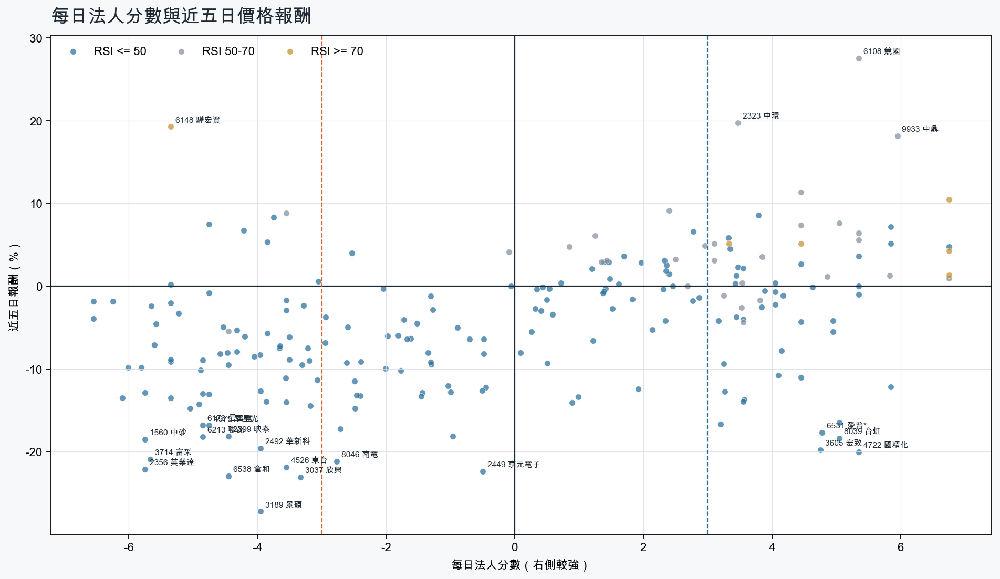
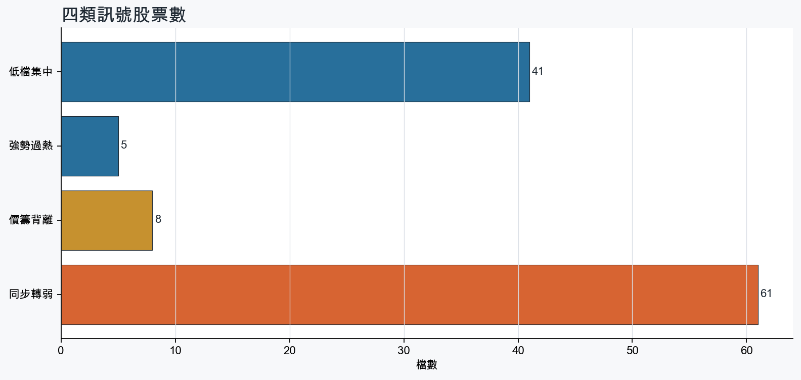
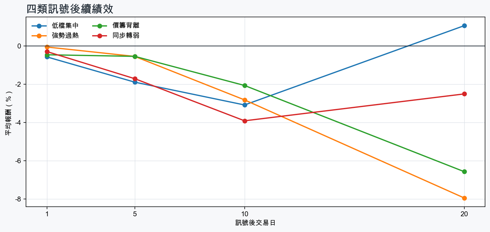

市場情緒偏空
近5日法人合計-4,228,253 張
篩選池上漲比例28.6%
籌碼好 / RSI低15 檔
籌碼差 / 價跌15 檔



EPS × PE VALUATION
法人常用的相對估值
顯示保守、基準與樂觀估值帶，不把單一數字包裝成精準目標價。
最新累計 EPS 依季數年化 × 同產業有效 P/E 的 Q25／中位數／Q75。排除本公司、非正 P/E，並以 1.5×IQR 排除離群值。估值帶是公開資料篩選值，不是法人目標價；未使用分析師預估 EPS。
MOOD × MONEY
情緒與籌碼雷達
熱度代表被討論程度；情緒分與法人方向分開計算。熱門不等於適合追價，樣本不足也不硬判多空。
| 股票 | 情緒 | 討論熱度 | 情緒 × 籌碼 | 情緒 × 基本面 |
|---|---|---|---|---|
| 3037 欣興同步轉弱 | 情緒低迷 -70.5信心 100 | 1002 篇 / 230 留言 / 3 則新聞 | 情籌雙弱法人分 -3.3 | 基本面佳、情緒悲觀基本面分 +3.6 |
| 3105 穩懋低檔集中 | 中性分歧 -8.1信心 61 | 641 篇 / 19 留言 / 3 則新聞 | 情籌混合法人分 +4.0 | 基本面與情緒分歧基本面分 +3.6 |
| 6538 倉和同步轉弱 | 情緒低迷 -36.8信心 37 | 641 篇 / 28 留言 / 0 則新聞 | 情籌雙弱法人分 -4.5 | 基本面佳、情緒悲觀基本面分 +3.0 |
| 3189 景碩同步轉弱 | 偏空 -29.7信心 30 | 420 篇 / 0 留言 / 3 則新聞 | 情籌雙弱法人分 -4.0 | 基本面佳、情緒悲觀基本面分 +3.6 |
| 6213 聯茂同步轉弱 | 中性分歧 +0.0信心 30 | 420 篇 / 0 留言 / 3 則新聞 | 情籌混合法人分 -4.8 | 基本面與情緒分歧基本面分 +3.6 |
| 3714 富采同步轉弱 | 偏空 -29.7信心 30 | 420 篇 / 0 留言 / 3 則新聞 | 情籌雙弱法人分 -5.7 | 基本面佳、情緒悲觀基本面分 +1.2 |
| 8358 金居同步轉弱 | 偏多 +29.7信心 30 | 420 篇 / 0 留言 / 3 則新聞 | 熱門但法人撤退法人分 -4.0 | 基本面與情緒共振基本面分 +3.6 |
| 2312 金寶同步轉弱 | 偏多 +29.7信心 30 | 420 篇 / 0 留言 / 3 則新聞 | 熱門但法人撤退法人分 -4.9 | 基本面與情緒共振基本面分 +1.8 |
| 6148 驊宏資價籌背離 | 中性分歧 +0.0信心 30 | 420 篇 / 0 留言 / 3 則新聞 | 情籌混合法人分 -5.3 | 基本面與情緒分歧基本面分 +1.2 |
| 8227 巨有科技價籌背離 | 偏多 +29.7信心 30 | 420 篇 / 0 留言 / 3 則新聞 | 熱門但法人撤退法人分 -4.8 | 基本面與情緒共振基本面分 +3.0 |
| 6163 華電網價籌背離 | 中性分歧 +0.0信心 30 | 420 篇 / 0 留言 / 3 則新聞 | 情籌混合法人分 -3.5 | 基本面與情緒分歧基本面分 +3.0 |
| 3704 合勤控價籌背離 | 偏多 +29.7信心 30 | 420 篇 / 0 留言 / 3 則新聞 | 熱門但法人撤退法人分 -3.8 | 基本面與情緒共振基本面分 +3.0 |
01
籌碼好 / RSI低
優先研究基本面；法人續買且價格止穩時，才適合分批觀察。
| 股票 / 確認狀態 | 每日法人分 | 浦男式近似 | 法人加速度 | RSI / 相對強弱 | 量價確認 | 融資融券 | 每週集保確認 | 基本面 | EPS × 同業 P/E 估值 | 情緒 / 情籌 | 近期消息 | 論壇討論 |
|---|---|---|---|---|---|---|---|---|---|---|---|---|
| 4916 事欣科可研究 · 100 分籌碼與價格確認，可列研究清單 | +5.3法人 +10,436 張 / 4 天 | 接近 · 85站上月線；法人籌碼偏多；法人買盤加速；留意中期均線未翻多、量能尚未確認 | +1,211 張近3日 +6,230 / 連續 -1 日 | 48.3相對大盤 +14.9% | 量比 2.78確認分 +5.820日線低於60日線 | -%融資 - 張 / 融券 - 張 | +9.99 pp1000張 +8.48 pp | 單月營收年增 +112.4%；累計營收年增 +68.8%；2026 Q3 累計 EPS 6.95仍需觀察下一期財報延續性來源：公開資訊觀測站 | 基準 NT$ 124.9估值帶 97.67–172.4現價 101.0 · 估值帶內 · 距基準 +23.7%2026 Q3 累計 EPS 6.95 → 年化 9.27電腦及週邊同業 P/E 10.54／13.48／18.60 · n=82 · 信心較高以 Q3 累計 EPS 年化，不等同分析師全年預估來源：TWSE／TPEx 每日本益比 | 偏多 +29.7熱度 42 / 信心 30情籌共振 | 《電週邊》注意股：事欣科 近5日漲14.46%富聯網 · 11/17低軌衛星繼續飛！「這檔」連5漲28.7%挾穩懋、事欣科漲停 奇鋐噴漲9.55%、聯發科攻7%Yahoo股市 · 11/13 | 近期沒有明確提及本股的論壇樣本 |
| 3715 定穎投控可研究 · 97 分籌碼與價格確認，可列研究清單 | +5.8法人 +9,913 張 / 4 天 | 命中 · 89站上月線；中期均線偏多；法人籌碼偏多；留意法人買盤未加速 | -7,922 張近3日 +1,998 / 連續 +1 日 | 47.2相對大盤 +10.1% | 量比 1.63確認分 +2.5法人買盤減速 | -%融資 - 張 / 融券 - 張 | +4.94 pp1000張 +6.49 pp | 單月營收年增 +121.5%；累計營收年增 +58.9%2026 Q3 累計 EPS -1.44；2026 Q3 累計營益率 5.0%來源：公開資訊觀測站 | 不適用年化 EPS 非正數，不適合使用本益比估值 | 樣本不足 +0.0熱度 25 / 信心 10情緒樣本不足 | 《電零組》注意股：定穎投控 近5日漲26.73%富聯網 · 11/17 | 近期沒有明確提及本股的論壇樣本 |
| 3105 穩懋可研究 · 93 分籌碼與價格確認，可列研究清單 | +4.0法人 +3,285 張 / 3 天 | 接近 · 86中期均線偏多；法人籌碼偏多；法人買盤加速；留意未站月線、動能位置非最佳 | +382 張近3日 +3,202 / 連續 -1 日 | 44.3相對大盤 +14.7% | 量比 1.45確認分 +2.1收盤跌破20日線 | -0.2%融資 -101 張 / 融券 +758 張 | +4.34 pp1000張 +3.62 pp | 單月營收年增 +31.9%；累計營收年增 +32.5%；2026 Q3 累計 EPS 8.12仍需觀察下一期財報延續性來源：公開資訊觀測站 | 基準 NT$ 203.2估值帶 144.5–319.4現價 481.0 · 高於估值帶 · 距基準 -57.8%2026 Q3 累計 EPS 8.12 → 年化 10.83半導體同業 P/E 13.35／18.77／29.50 · n=153 · 信心較高以 Q3 累計 EPS 年化，不等同分析師全年預估來源：TWSE／TPEx 每日本益比 | 中性分歧 -8.1熱度 64 / 信心 61情籌混合 | 3105 穩懋 - 謝謝空軍賞飯吃☕️ - 股市爆料同學會CMoney · 11/17《台北股市》注意股：17日50檔世芯-KY.健策.驊宏資.穩懋.雙鴻等- 上市櫃旺得富理財網 · 11/17 | [情報] 2323 中環 賣穩懋640張，賺13,735,262元PTT Stock · 11-16 · 19 留言 |
| 4977 眾達-KY可研究 · 100 分籌碼與價格確認，可列研究清單 | +3.5法人 +2,162 張 / 2 天 | 命中 · 90站上月線；中期均線偏多；法人籌碼偏多；留意買超延續不足、量能尚未確認 | +2,695 張近3日 +2,585 / 連續 +1 日 | 47.2相對大盤 +17.5% | 量比 2.74確認分 +5.8價格、量能與籌碼未見明顯弱項 | -%融資 - 張 / 融券 - 張 | +0.17 pp1000張 +0.59 pp | 單月營收年增 +117.4%；累計營收年增 +36.3%；2026 Q3 累計 EPS 4.39仍需觀察下一期財報延續性來源：公開資訊觀測站 | 基準 NT$ 108.9估值帶 77.26–241.4現價 179.5 · 估值帶內 · 距基準 -39.3%2026 Q3 累計 EPS 4.39 → 年化 5.85通信網路同業 P/E 13.20／18.61／41.25 · n=61 · 信心中等以 Q3 累計 EPS 年化，不等同分析師全年預估來源：TWSE／TPEx 每日本益比 | 偏多 +29.7熱度 42 / 信心 30情籌共振 | 【09:19 即時新聞】眾達-KY(4977)攻上漲停，光通訊族群買盤回流CMoney投資網誌 · 11/1710月營收連5月年增 法人看好眾達-KY明年EPS年增率達近250%蕃新聞 · 11/17 | 近期沒有明確提及本股的論壇樣本 |
| 3701 大眾控等待確認 · 100 分先等基本面止穩 | +5.3法人 +7,717 張 / 4 天 | 接近 · 85站上月線；中期均線偏多；法人籌碼偏多；留意基本面偏弱 | +3,896 張近3日 +6,766 / 連續 +1 日 | 50.0相對大盤 +5.9% | 量比 0.98確認分 +6.0價格、量能與籌碼未見明顯弱項 | -%融資 - 張 / 融券 - 張 | +2.61 pp1000張 +1.87 pp | 單月營收年增 +94.0%累計營收年增 -3.9%；2026 Q3 累計 EPS -1.95；2026 Q3 累計營益率 -8.1%來源：公開資訊觀測站 | 不適用年化 EPS 非正數，不適合使用本益比估值 | 樣本不足 +0.0熱度 0 / 信心 0情緒樣本不足 | 近期沒有通過股票語境篩選的新聞 | 近期沒有明確提及本股的論壇樣本 |
| 5522 遠雄可研究 · 92 分籌碼與價格確認，可列研究清單 | +3.8法人 +2,033 張 / 5 天 | 接近 · 82站上月線；法人籌碼偏多；法人買盤加速；留意中期均線未翻多、動能位置非最佳 | +956 張近3日 +1,299 / 連續 +5 日 | 37.5相對大盤 +13.1% | 量比 1.27確認分 +4.520日線低於60日線 | -%融資 - 張 / 融券 - 張 | -0.46 pp1000張 -0.41 pp | 累計營收年增 +58.5%；2026 Q3 累計 EPS 4.70；2026 Q3 累計營益率 23.0%單月營收年增 -18.1%來源：公開資訊觀測站 | 基準 NT$ 56.96估值帶 39.67–81.91現價 60.90 · 估值帶內 · 距基準 -6.5%2026 Q3 累計 EPS 4.70 → 年化 6.27建材營造同業 P/E 6.33／9.09／13.07 · n=64 · 信心較高以 Q3 累計 EPS 年化，不等同分析師全年預估來源：TWSE／TPEx 每日本益比 | 偏多 +19.8熱度 35 / 信心 20情籌混合 | 【12:13 即時新聞】遠雄(5522)盤中走強，法人買盤延續成焦點CMoney投資網誌 · 11/17【10:50 即時新聞】遠雄(5522)盤中走強，交屋與獲利題材受關注CMoney投資網誌 · 11/16 | 近期沒有明確提及本股的論壇樣本 |
| 5876 上海商銀可研究 · 95 分籌碼與價格確認，可列研究清單 | +3.4法人 +7,365 張 / 5 天 | 命中 · 92站上月線；中期均線偏多；法人籌碼偏多；留意基本面中性 | +4,776 張近3日 +5,833 / 連續 +5 日 | 46.8相對大盤 +13.4% | 量比 1.30確認分 +5.7價格、量能與籌碼未見明顯弱項 | -%融資 - 張 / 融券 - 張 | +0.13 pp1000張 +0.09 pp | 累計營收年增 +1.7%；2026 Q3 累計 EPS 3.11單月營收年增 -7.7%來源：公開資訊觀測站 | 基準 NT$ 49.68估值帶 29.19–63.07現價 53.30 · 估值帶內 · 距基準 -6.8%2026 Q3 累計 EPS 3.11 → 年化 4.15金融保險同業 P/E 7.04／11.98／15.21 · n=39 · 信心較高以 Q3 累計 EPS 年化，不等同分析師全年預估來源：TWSE／TPEx 每日本益比 | 樣本不足 +0.0熱度 0 / 信心 0情緒樣本不足 | 近期沒有通過股票語境篩選的新聞 | 近期沒有明確提及本股的論壇樣本 |
| 2547 日勝生等待確認 · 84 分籌碼有訊號，但價格尚未確認 | +3.5法人 +1,808 張 / 5 天 | 接近 · 71法人籌碼偏多；法人買盤加速；買超具延續性；留意未站月線、中期均線未翻多 | +819 張近3日 +1,317 / 連續 +6 日 | 35.4相對大盤 +10.3% | 量比 1.37確認分 +2.0收盤跌破20日線；20日線低於60日線；流動性偏低 | -%融資 - 張 / 融券 - 張 | +0.13 pp1000張 +0.21 pp | 單月營收年增 +193.2%；累計營收年增 +84.9%；2026 Q3 累計 EPS 0.30仍需觀察下一期財報延續性來源：公開資訊觀測站 | 基準 NT$ 3.57估值帶 2.50–5.16現價 9.43 · 高於估值帶 · 距基準 -62.2%2026 Q3 累計 EPS 0.30 → 年化 0.40建材營造同業 P/E 6.26／8.92／12.89 · n=64 · 信心較高以 Q3 累計 EPS 年化，不等同分析師全年預估來源：TWSE／TPEx 每日本益比 | 樣本不足 +0.0熱度 0 / 信心 0情緒樣本不足 | 近期沒有通過股票語境篩選的新聞 | 近期沒有明確提及本股的論壇樣本 |
| 5388 中磊等待確認 · 79 分籌碼有訊號，但價格尚未確認 | +6.8法人 +3,809 張 / 5 天 | 接近 · 69法人籌碼偏多；買超具延續性；明顯強於大盤；留意未站月線、中期均線未翻多 | -1,345 張近3日 +1,285 / 連續 +9 日 | 41.9相對大盤 +9.7% | 量比 1.56確認分 -1.0收盤跌破20日線；20日線低於60日線；法人買盤減速 | -%融資 - 張 / 融券 - 張 | -0.48 pp1000張 -0.53 pp | 單月營收年增 +63.6%；累計營收年增 +55.2%；2026 Q3 累計 EPS 4.342026 Q3 累計營益率 3.4%來源：公開資訊觀測站 | 基準 NT$ 111.0估值帶 76.38–238.7現價 70.40 · 低於估值帶 · 距基準 +57.6%2026 Q3 累計 EPS 4.34 → 年化 5.79通信網路同業 P/E 13.20／19.18／41.25 · n=61 · 信心中等以 Q3 累計 EPS 年化，不等同分析師全年預估來源：TWSE／TPEx 每日本益比 | 偏多 +29.7熱度 42 / 信心 30情籌共振 | 《投信買超7-6》世芯KY(160)、中磊(149)、技嘉(148)富聯網 · 11/17【11:56 即時新聞】中磊(5388)盤中走強 外資投信同步買超延續CMoney投資網誌 · 11/17 | 近期沒有明確提及本股的論壇樣本 |
| 6425 易發等待確認 · 74 分籌碼有訊號，但價格尚未確認 | +5.3法人 +2,076 張 / 4 天 | 接近 · 74中期均線偏多；法人籌碼偏多；買超具延續性；留意未站月線、法人買盤未加速 | -119 張近3日 +1,018 / 連續 +1 日 | 43.2相對大盤 +11.3% | 量比 0.76確認分 -1.8收盤跌破20日線；法人買盤減速 | -1.5%融資 -43 張 / 融券 -11 張 | +2.25 pp1000張 +2.32 pp | 單月營收年增 +253.5%；累計營收年增 +82.2%；2026 Q3 累計 EPS 1.172026 Q3 累計營益率 4.5%來源：公開資訊觀測站 | 基準 NT$ 30.36估值帶 20.58–47.83現價 70.00 · 高於估值帶 · 距基準 -56.6%2026 Q3 累計 EPS 1.17 → 年化 1.56電機機械同業 P/E 13.19／19.46／30.66 · n=75 · 信心較高以 Q3 累計 EPS 年化，不等同分析師全年預估來源：TWSE／TPEx 每日本益比 | 樣本不足 +9.9熱度 25 / 信心 10情緒樣本不足 | 投入5.6億元台南蓋新廠！「易發旗下精密機械廠」衝刺擴產 導入智慧化與數位化技術Yahoo股市 · 10/31 | 近期沒有明確提及本股的論壇樣本 |
| 2542 興富發等待確認 · 82 分籌碼有訊號，但價格尚未確認 | +3.5法人 +8,166 張 / 5 天 | 接近 · 66法人籌碼偏多；法人買盤加速；買超具延續性；留意未站月線、中期均線未翻多 | +5,283 張近3日 +5,562 / 連續 +5 日 | 43.0相對大盤 +10.1% | 量比 0.64確認分 +1.6收盤跌破20日線；20日線低於60日線；成交量不足 | -%融資 - 張 / 融券 - 張 | +0.08 pp1000張 +0.30 pp | 單月營收年增 +31.7%；累計營收年增 +185.5%；2026 Q3 累計 EPS 3.83仍需觀察下一期財報延續性來源：公開資訊觀測站 | 基準 NT$ 46.42估值帶 31.97–66.74現價 38.05 · 估值帶內 · 距基準 +22.0%2026 Q3 累計 EPS 3.83 → 年化 5.11建材營造同業 P/E 6.26／9.09／13.07 · n=64 · 信心較高以 Q3 累計 EPS 年化，不等同分析師全年預估來源：TWSE／TPEx 每日本益比 | 偏多 +19.8熱度 35 / 信心 20情籌混合 | 興富發前三季大賺逾80億，Q4交屋潮助力營收成長591新聞 · 11/13《外資買超21-3》興富發(3269)、台郡(2856)、第一金(2824)富聯網 · 11/17 | 近期沒有明確提及本股的論壇樣本 |
| 1710 東聯等待確認 · 83 分籌碼有訊號，但價格尚未確認 | +3.4法人 +2,610 張 / 5 天 | 接近 · 76法人籌碼偏多；法人買盤加速；買超具延續性；留意未站月線、中期均線未翻多 | +1,081 張近3日 +1,866 / 連續 +6 日 | 41.5相對大盤 +6.1% | 量比 1.66確認分 +2.0收盤跌破20日線；20日線低於60日線 | -%融資 - 張 / 融券 - 張 | +0.35 pp1000張 +0.33 pp | 單月營收年增 +88.6%；累計營收年增 +12.8%；2026 Q3 累計 EPS 0.202026 Q3 累計營益率 1.6%來源：公開資訊觀測站 | 基準 NT$ 4.35估值帶 3.06–5.53現價 16.05 · 高於估值帶 · 距基準 -72.9%2026 Q3 累計 EPS 0.20 → 年化 0.27化學工業同業 P/E 11.47／16.30／20.75 · n=33 · 信心較低以 Q3 累計 EPS 年化，不等同分析師全年預估；交易所無有效本益比，無法交叉檢核近四季 EPS來源：TWSE／TPEx 每日本益比 | 樣本不足 +0.0熱度 0 / 信心 0情緒樣本不足 | 近期沒有通過股票語境篩選的新聞 | 近期沒有明確提及本股的論壇樣本 |
| 2034 允強等待確認 · 75 分籌碼有訊號，但價格尚未確認 | +3.8法人 +3,693 張 / 4 天 | 接近 · 74中期均線偏多；法人籌碼偏多；買超具延續性；留意未站月線、法人買盤未加速 | -3,825 張近3日 +253 / 連續 +2 日 | 40.9相對大盤 +12.2% | 量比 0.74確認分 -0.2收盤跌破20日線；法人買盤減速 | -%融資 - 張 / 融券 - 張 | +1.61 pp1000張 +1.92 pp | 單月營收年增 +99.8%；累計營收年增 +11.4%；2026 Q3 累計 EPS 0.542026 Q3 累計營益率 4.8%來源：公開資訊觀測站 | 基準 NT$ 7.89估值帶 6.72–10.32現價 23.05 · 高於估值帶 · 距基準 -65.8%2026 Q3 累計 EPS 0.54 → 年化 0.72鋼鐵工業同業 P/E 9.34／10.96／14.34 · n=31 · 信心較高以 Q3 累計 EPS 年化，不等同分析師全年預估來源：TWSE／TPEx 每日本益比 | 樣本不足 +0.0熱度 0 / 信心 0情緒樣本不足 | 近期沒有通過股票語境篩選的新聞 | 近期沒有明確提及本股的論壇樣本 |
| 3661 世芯-KY等待確認 · 83 分籌碼有訊號，但價格尚未確認 | +5.8法人 +2,184 張 / 4 天 | 接近 · 83站上月線；法人籌碼偏多；買超具延續性；留意中期均線未翻多、法人買盤未加速 | -2,017 張近3日 +760 / 連續 -1 日 | 46.2相對大盤 +11.7% | 量比 2.08確認分 +1.020日線低於60日線；法人買盤減速 | -%融資 - 張 / 融券 - 張 | -2.97 pp1000張 -1.53 pp | 單月營收年增 +515.8%；累計營收年增 +72.6%；2026 Q3 累計 EPS 75.94仍需觀察下一期財報延續性來源：公開資訊觀測站 | 基準 NT$ 1,901估值帶 1,352–2,987現價 3,595 · 高於估值帶 · 距基準 -47.1%2026 Q3 累計 EPS 75.94 → 年化 101.3半導體同業 P/E 13.35／18.77／29.50 · n=153 · 信心較高以 Q3 累計 EPS 年化，不等同分析師全年預估來源：TWSE／TPEx 每日本益比 | 中性分歧 +0.0熱度 42 / 信心 30情籌混合 | 兩檔ASIC列注意股，世芯-KY/創意10月獲利年增靚台視全球資訊網 · 11/17《台北股市》注意股：17日50檔世芯-KY.健策.驊宏資.穩懋.雙鴻等- 上市櫃旺得富理財網 · 11/17 | 近期沒有明確提及本股的論壇樣本 |
| 2379 瑞昱可研究 · 78 分籌碼與價格確認，可列研究清單 | +3.5法人 +1,935 張 / 5 天 | 接近 · 86中期均線偏多；法人籌碼偏多；法人買盤加速；留意未站月線、動能位置非最佳 | +40 張近3日 +1,133 / 連續 +8 日 | 35.1相對大盤 +6.9% | 量比 1.05確認分 +0.8收盤跌破20日線 | -%融資 - 張 / 融券 - 張 | +0.15 pp1000張 +0.06 pp | 單月營收年增 +32.1%；累計營收年增 +17.2%；2026 Q3 累計 EPS 23.91仍需觀察下一期財報延續性來源：公開資訊觀測站 | 基準 NT$ 623.6估值帶 426.2–955.1現價 717.0 · 估值帶內 · 距基準 -13.0%2026 Q3 累計 EPS 23.91 → 年化 31.88半導體同業 P/E 13.37／19.56／29.96 · n=156 · 信心較高以 Q3 累計 EPS 年化，不等同分析師全年預估來源：TWSE／TPEx 每日本益比 | 樣本不足 +0.0熱度 25 / 信心 10情緒樣本不足 | 【13:24 即時新聞】瑞昱(2379)盤中緩步走強，法人買盤延續CMoney投資網誌 · 11/17 | 近期沒有明確提及本股的論壇樣本 |
02
籌碼好 / RSI高
趨勢強但不追價，等待量縮、RSI降溫或回測支撐。
| 股票 / 確認狀態 | 每日法人分 | 浦男式近似 | 法人加速度 | RSI / 相對強弱 | 量價確認 | 融資融券 | 每週集保確認 | 基本面 | EPS × 同業 P/E 估值 | 情緒 / 情籌 | 近期消息 | 論壇討論 |
|---|---|---|---|---|---|---|---|---|---|---|---|---|
| 2610 華航等待拉回 · 100 分等拉回，不追價 | +6.8法人 +77,664 張 / 5 天 | 命中 · 89站上月線；中期均線偏多；法人籌碼偏多；留意法人買盤未加速、動能位置非最佳 | -58,438 張近3日 +37,090 / 連續 +10 日 | 71.1相對大盤 +27.3% | 量比 1.08確認分 +2.5法人買盤減速 | -%融資 - 張 / 融券 - 張 | +3.53 pp1000張 +3.74 pp | 單月營收年增 +22.4%；累計營收年增 +20.2%；2026 Q3 累計 EPS 1.80仍需觀察下一期財報延續性來源：公開資訊觀測站 | 基準 NT$ 22.90估值帶 18.48–32.16現價 23.10 · 估值帶內 · 距基準 -0.9%2026 Q3 累計 EPS 1.80 → 年化 2.40航運業同業 P/E 7.70／9.54／13.40 · n=26 · 信心較高以 Q3 累計 EPS 年化，不等同分析師全年預估來源：TWSE／TPEx 每日本益比 | 偏多 +29.7熱度 42 / 信心 30情籌共振 | 【即時新聞】法人看旺2027年航空產業需求，華航客運與貨運帶動營運成長CMoney投資網誌 · 11/17不敵賣壓台股17日再跌947點 華航逆風收漲1.76%理財周刊 · 11/17 | 近期沒有明確提及本股的論壇樣本 |
| 2618 長榮航等待拉回 · 100 分等拉回，不追價 | +6.8法人 +68,341 張 / 5 天 | 命中 · 89站上月線；中期均線偏多；法人籌碼偏多；留意法人買盤未加速、動能位置非最佳 | -17,817 張近3日 +34,558 / 連續 +10 日 | 76.1相對大盤 +27.6% | 量比 1.35確認分 +2.5法人買盤減速 | -%融資 - 張 / 融券 - 張 | +1.79 pp1000張 +1.87 pp | 單月營收年增 +22.6%；累計營收年增 +19.8%；2026 Q3 累計 EPS 3.50仍需觀察下一期財報延續性來源：公開資訊觀測站 | 基準 NT$ 44.52估值帶 35.93–62.53現價 48.10 · 估值帶內 · 距基準 -7.4%2026 Q3 累計 EPS 3.50 → 年化 4.67航運業同業 P/E 7.70／9.54／13.40 · n=26 · 信心較高以 Q3 累計 EPS 年化，不等同分析師全年預估來源：TWSE／TPEx 每日本益比 | 樣本不足 +0.0熱度 25 / 信心 10情緒樣本不足 | 【13:30 即時新聞】長榮航(2618)盤中續揚逼近前高，外資買盤成焦點CMoney投資網誌 · 11/17 | 近期沒有明確提及本股的論壇樣本 |
| 1476 儒鴻等待拉回 · 100 分等拉回，不追價 | +6.8法人 +2,751 張 / 5 天 | 接近 · 90站上月線；中期均線偏多；法人籌碼偏多；留意RSI過熱 | +373 張近3日 +1,559 / 連續 +5 日 | 82.3相對大盤 +34.8% | 量比 1.69確認分 +6.2價格、量能與籌碼未見明顯弱項 | -%融資 - 張 / 融券 - 張 | +2.01 pp1000張 -0.29 pp | 單月營收年增 +10.7%；累計營收年增 +5.9%；2026 Q3 累計 EPS 18.70仍需觀察下一期財報延續性來源：公開資訊觀測站 | 基準 NT$ 321.4估值帶 225.7–500.2現價 385.0 · 估值帶內 · 距基準 -16.5%2026 Q3 累計 EPS 18.70 → 年化 24.93紡織纖維同業 P/E 9.05／12.89／20.06 · n=30 · 信心較高以 Q3 累計 EPS 年化，不等同分析師全年預估來源：TWSE／TPEx 每日本益比 | 偏空 -29.7熱度 42 / 信心 30法人布局、市場悲觀 | 【即時新聞】最新AI前景不確定性引發資金輪動，法人最新點名儒鴻風險報酬比轉佳！CMoney投資網誌 · 11/17【即時新聞】儒鴻(1476)最新動向！大盤遭賣超千億中獲外資投信聯手敲進力挺CMoney投資網誌 · 11/16 | 近期沒有明確提及本股的論壇樣本 |
| 1477 聚陽等待拉回 · 100 分等拉回，不追價 | +3.3法人 +2,026 張 / 2 天 | 命中 · 91站上月線；中期均線偏多；法人籌碼偏多；留意買超延續不足、動能位置非最佳 | +2,300 張近3日 +2,206 / 連續 -1 日 | 74.0相對大盤 +24.1% | 量比 1.87確認分 +6.5價格、量能與籌碼未見明顯弱項 | -%融資 - 張 / 融券 - 張 | +1.24 pp1000張 +1.28 pp | 單月營收年增 +15.1%；累計營收年增 +1.3%；2026 Q3 累計 EPS 11.62仍需觀察下一期財報延續性來源：公開資訊觀測站 | 基準 NT$ 199.7估值帶 140.2–310.8現價 226.5 · 估值帶內 · 距基準 -11.8%2026 Q3 累計 EPS 11.62 → 年化 15.49紡織纖維同業 P/E 9.05／12.89／20.06 · n=30 · 信心較高以 Q3 累計 EPS 年化，不等同分析師全年預估來源：TWSE／TPEx 每日本益比 | 樣本不足 +0.0熱度 0 / 信心 0情緒樣本不足 | 近期沒有通過股票語境篩選的新聞 | 近期沒有明確提及本股的論壇樣本 |
| 2453 凌群等待拉回 · 90 分等拉回，不追價 | +4.5法人 +1,755 張 / 3 天 | 命中 · 89站上月線；中期均線偏多；法人籌碼偏多；留意法人買盤未加速、動能位置非最佳 | -495 張近3日 +939 / 連續 +1 日 | 70.1相對大盤 +27.9% | 量比 1.41確認分 +2.5法人買盤減速 | -%融資 - 張 / 融券 - 張 | +1.98 pp1000張 +1.03 pp | 單月營收年增 +30.8%；累計營收年增 +8.8%；2026 Q3 累計 EPS 2.402026 Q3 累計營益率 4.9%來源：公開資訊觀測站 | 基準 NT$ 50.46估值帶 36.32–62.98現價 59.10 · 估值帶內 · 距基準 -14.6%2026 Q3 累計 EPS 2.40 → 年化 3.20資訊服務同業 P/E 11.35／15.77／19.68 · n=34 · 信心較高以 Q3 累計 EPS 年化，不等同分析師全年預估來源：TWSE／TPEx 每日本益比 | 樣本不足 +0.0熱度 0 / 信心 0情緒樣本不足 | 近期沒有通過股票語境篩選的新聞 | 近期沒有明確提及本股的論壇樣本 |
03
籌碼差 / 股價上漲
可能是事件行情或軋空；沒有籌碼改善前避免追高。
| 股票 / 確認狀態 | 每日法人分 | 浦男式近似 | 法人加速度 | RSI / 相對強弱 | 量價確認 | 融資融券 | 每週集保確認 | 基本面 | EPS × 同業 P/E 估值 | 情緒 / 情籌 | 近期消息 | 論壇討論 |
|---|---|---|---|---|---|---|---|---|---|---|---|---|
| 6148 驊宏資風險警示 · 50 分背離警戒，避免追高 | -5.3法人 -3,478 張 / 1 天 | 接近 · 67站上月線；中期均線偏多；明顯強於大盤；留意法人籌碼偏弱、法人買盤未加速 | -192 張近3日 -759 / 連續 +1 日 | 70.4相對大盤 +62.4% | 量比 0.92確認分 +3.1法人買盤減速 | -2.5%融資 -96 張 / 融券 +544 張 | +3.78 pp1000張 +0.00 pp | 單月營收年增 +145.1%；2026 Q3 累計 EPS 0.48累計營收年增 -17.2%；2026 Q3 累計營益率 2.8%來源：公開資訊觀測站 | 基準 NT$ 10.52估值帶 7.28–12.44現價 57.60 · 高於估值帶 · 距基準 -81.7%2026 Q3 累計 EPS 0.48 → 年化 0.64資訊服務同業 P/E 11.37／16.44／19.43 · n=35 · 信心較高以 Q3 累計 EPS 年化，不等同分析師全年預估來源：TWSE／TPEx 每日本益比 | 中性分歧 +0.0熱度 42 / 信心 30情籌混合 | 熱門股》資金避風港 驊宏資漲停自由財經 · 11/17驊宏資（6148）收盤多少進處置－熱門話題｜股市爆料同學會CMoney · 11/17 | 近期沒有明確提及本股的論壇樣本 |
| 8227 巨有科技風險警示 · 9 分背離警戒，避免追高 | -4.8法人 -1,501 張 / 2 天 | 未命中 · 35基本面有支撐；流動性足夠；留意未站月線、中期均線未翻多 | -615 張近3日 -1,036 / 連續 -2 日 | 40.4相對大盤 -2.6% | 量比 2.58確認分 -4.4收盤跌破20日線；20日線低於60日線；法人買盤減速 | +2.7%融資 +59 張 / 融券 +3 張 | -4.76 pp1000張 -3.37 pp | 單月營收年增 +111.8%；累計營收年增 +56.9%；2026 Q3 累計 EPS 3.812026 Q3 累計營益率 7.5%來源：公開資訊觀測站 | 基準 NT$ 95.35估值帶 67.82–149.9現價 229.0 · 高於估值帶 · 距基準 -58.4%2026 Q3 累計 EPS 3.81 → 年化 5.08半導體同業 P/E 13.35／18.77／29.50 · n=153 · 信心較高以 Q3 累計 EPS 年化，不等同分析師全年預估來源：TWSE／TPEx 每日本益比 | 偏多 +29.7熱度 42 / 信心 30熱門但法人撤退 | 【11:38 即時新聞】巨有科技(8227)盤中走強，市場聚焦ASIC成長題材CMoney投資網誌 · 11/17《上櫃個股成交量前30名（6-6）》巨有科技(8160)富聯網 · 11/17 | 近期沒有明確提及本股的論壇樣本 |
| 6163 華電網風險警示 · 38 分背離警戒，避免追高 | -3.5法人 -1,788 張 / 3 天 | 接近 · 60站上月線；買超具延續性；明顯強於大盤；留意中期均線未翻多、法人籌碼偏弱 | -2,944 張近3日 -1,943 / 連續 -2 日 | 51.1相對大盤 +13.8% | 量比 4.82確認分 -0.120日線低於60日線；法人買盤減速 | +2.4%融資 +361 張 / 融券 -1 張 | -1.64 pp1000張 -3.93 pp | 單月營收年增 +289.7%；累計營收年增 +55.9%；2026 Q3 累計 EPS 0.282026 Q3 累計營益率 1.3%來源：公開資訊觀測站 | 基準 NT$ 5.89估值帶 4.24–7.03現價 40.85 · 高於估值帶 · 距基準 -85.6%2026 Q3 累計 EPS 0.28 → 年化 0.37資訊服務同業 P/E 11.35／15.77／18.84 · n=34 · 信心較低以 Q3 累計 EPS 年化，不等同分析師全年預估；年化 EPS 為交易所近四季 EPS 的 0.33 倍，需保守解讀來源：TWSE／TPEx 每日本益比 | 中性分歧 +0.0熱度 42 / 信心 30情籌混合 | 華電網（6163）爆量後賣壓浮現－熱門話題｜股市爆料同學會CMoney · 11/17【09:32 即時新聞】華電網(6163)走強收復41元上方，市場聚焦AI與資安標案動能CMoney投資網誌 · 11/17 | 近期沒有明確提及本股的論壇樣本 |
| 3704 合勤控風險警示 · 42 分背離警戒，避免追高 | -3.8法人 -2,495 張 / 1 天 | 未命中 · 51站上月線；明顯強於大盤；基本面有支撐；留意中期均線未翻多、法人籌碼偏弱 | -2,413 張近3日 -2,255 / 連續 +1 日 | 44.6相對大盤 +10.2% | 量比 4.72確認分 -0.120日線低於60日線；法人買盤減速 | -%融資 - 張 / 融券 - 張 | -0.28 pp1000張 +0.07 pp | 單月營收年增 +22.2%；累計營收年增 +16.7%；2026 Q3 累計 EPS 2.712026 Q3 累計營益率 6.1%來源：公開資訊觀測站 | 基準 NT$ 69.30估值帶 48.64–149.1現價 38.50 · 低於估值帶 · 距基準 +80.0%2026 Q3 累計 EPS 2.71 → 年化 3.61通信網路同業 P/E 13.46／19.18／41.25 · n=61 · 信心中等以 Q3 累計 EPS 年化，不等同分析師全年預估來源：TWSE／TPEx 每日本益比 | 偏多 +29.7熱度 42 / 信心 30熱門但法人撤退 | 今日最夯股／合勤控逆勢直線衝漲停 量能增加有何題材？ | 市場焦點 | 證券經濟日報 · 11/17《通網股》國防商機點火！合勤控亮燈前三季獲利超車去年全年- 上市櫃旺得富理財網 · 11/17 | 近期沒有明確提及本股的論壇樣本 |
| 6190 萬泰科風險警示 · 25 分背離警戒，避免追高 | -4.2法人 -1,413 張 / 1 天 | 未命中 · 41明顯強於大盤；基本面有支撐；流動性足夠；留意未站月線、中期均線未翻多 | -1,276 張近3日 -1,352 / 連續 -2 日 | 44.6相對大盤 +3.1% | 量比 3.04確認分 -3.4收盤跌破20日線；20日線低於60日線；法人買盤減速 | -1.5%融資 -115 張 / 融券 +25 張 | -0.14 pp1000張 +0.58 pp | 單月營收年增 +59.9%；累計營收年增 +35.3%；2026 Q3 累計 EPS 2.622026 Q3 累計營益率 7.9%來源：公開資訊觀測站 | 基準 NT$ 65.01估值帶 46.11–144.1現價 60.40 · 估值帶內 · 距基準 +7.6%2026 Q3 累計 EPS 2.62 → 年化 3.49通信網路同業 P/E 13.20／18.61／41.25 · n=61 · 信心中等以 Q3 累計 EPS 年化，不等同分析師全年預估來源：TWSE／TPEx 每日本益比 | 偏多 +29.7熱度 42 / 信心 30熱門但法人撤退 | 【12:15 即時新聞】萬泰科(6190)股價走強，低軌衛星與AI線材成盤中焦點CMoney投資網誌 · 11/13【12:51 即時新聞】萬泰科(6190)走強漲逾6%，市場聚焦營收高檔與成長題材CMoney投資網誌 · 11/12 | 近期沒有明確提及本股的論壇樣本 |
| 2413 環科風險警示 · 49 分背離警戒，避免追高 | -3.9法人 -1,379 張 / 3 天 | 接近 · 63中期均線偏多；法人買盤加速；買超具延續性；留意未站月線、法人籌碼偏弱 | +558 張近3日 -398 / 連續 +2 日 | 38.8相對大盤 +5.5% | 量比 3.40確認分 +1.2收盤跌破20日線 | -%融資 - 張 / 融券 - 張 | +0.34 pp1000張 +0.00 pp | 單月營收年增 +19.7%；累計營收年增 +14.2%；2026 Q3 累計 EPS 2.232026 Q3 累計營益率 4.9%來源：公開資訊觀測站 | 基準 NT$ 59.38估值帶 40.79–88.87現價 48.50 · 估值帶內 · 距基準 +22.4%2026 Q3 累計 EPS 2.23 → 年化 2.97電子零組件同業 P/E 13.72／19.97／29.89 · n=142 · 信心較高以 Q3 累計 EPS 年化，不等同分析師全年預估來源：TWSE／TPEx 每日本益比 | 樣本不足 +0.0熱度 25 / 信心 10情緒樣本不足 | 【09:26 即時新聞】環科(2413) 盤中走強，低軌衛星題材再受關注CMoney投資網誌 · 11/17 | 近期沒有明確提及本股的論壇樣本 |
| 0055 元大MSCI金融風險警示 · 41 分背離警戒，避免追高 | -5.3法人 -1,575 張 / 1 天 | 未命中 · 53中期均線偏多；明顯強於大盤；量價健康；留意未站月線、法人籌碼偏弱 | -51 張近3日 -1,204 / 連續 -1 日 | 41.9相對大盤 +12.7% | 量比 2.04確認分 +1.9收盤跌破20日線；法人買盤減速 | -%融資 - 張 / 融券 - 張 | +2.05 pp1000張 +3.23 pp | 尚無明確成長訊號仍需觀察下一期財報延續性來源：公開資訊觀測站 | 不適用最新財報缺少可年化 EPS | 樣本不足 +0.0熱度 25 / 信心 10情緒樣本不足 | 0055 元大MSCI金融 - 台股連三漲後急殺千點0055、00713逆勢收紅展現抗震力- 股市爆料同學會CMoney · 11/12 | 近期沒有明確提及本股的論壇樣本 |
| 1909 榮成風險警示 · 44 分背離警戒，避免追高 | -3.0法人 -2,655 張 / 0 天 | 未命中 · 40明顯強於大盤；量價健康；基本面有支撐；留意未站月線、中期均線未翻多 | -236 張近3日 -1,773 / 連續 -10 日 | 10.6相對大盤 +3.9% | 量比 1.82確認分 -0.3收盤跌破20日線；20日線低於60日線；法人買盤減速；流動性偏低 | -%融資 - 張 / 融券 - 張 | -0.08 pp1000張 -0.49 pp | 單月營收年增 +10.3%；累計營收年增 +15.6%；2026 Q3 累計 EPS 0.342026 Q3 累計營益率 0.8%來源：公開資訊觀測站 | 不適用同產業有效 P/E 樣本不足（4 檔） | 偏多 +29.7熱度 42 / 信心 30熱門但法人撤退 | 榮成祭庫藏股，今年全年可望終止連4虧MoneyDJ · 11/16【11:17 即時新聞】榮成(1909)盤中走強 聚焦財報轉盈與庫藏股啟動CMoney投資網誌 · 11/16 | 近期沒有明確提及本股的論壇樣本 |
04
籌碼差 / 股價下跌
籌碼與價格同弱，原則上迴避，等待法人與大戶同時回補。
| 股票 / 確認狀態 | 每日法人分 | 浦男式近似 | 法人加速度 | RSI / 相對強弱 | 量價確認 | 融資融券 | 每週集保確認 | 基本面 | EPS × 同業 P/E 估值 | 情緒 / 情籌 | 近期消息 | 論壇討論 |
|---|---|---|---|---|---|---|---|---|---|---|---|---|
| 3189 景碩風險警示 · 29 分迴避，等待籌碼翻正 | -4.0法人 -6,209 張 / 2 天 | 未命中 · 32法人買盤加速；基本面有支撐；流動性足夠；留意未站月線、中期均線未翻多 | +5,083 張近3日 -26 / 連續 +1 日 | 12.0相對大盤 -29.9% | 量比 0.88確認分 -1.8收盤跌破20日線；20日線低於60日線；近20日弱於大盤 | -%融資 - 張 / 融券 - 張 | -3.07 pp1000張 -3.19 pp | 單月營收年增 +49.0%；累計營收年增 +35.4%；2026 Q3 累計 EPS 8.38仍需觀察下一期財報延續性來源：公開資訊觀測站 | 基準 NT$ 209.7估值帶 149.2–329.6現價 542.0 · 高於估值帶 · 距基準 -61.3%2026 Q3 累計 EPS 8.38 → 年化 11.17半導體同業 P/E 13.35／18.77／29.50 · n=153 · 信心較高以 Q3 累計 EPS 年化，不等同分析師全年預估來源：TWSE／TPEx 每日本益比 | 偏空 -29.7熱度 42 / 信心 30情籌雙弱 | 焦點股／載板三雄高點回跌約5成！景碩、南電跌停失守年線欣興也亮綠燈| 產經非凡新聞台 · 11/17載板三雄高點回跌約5成！景碩、南電跌停失守年線欣興也亮綠燈- 證券工商時報 · 11/17 | 近期沒有明確提及本股的論壇樣本 |
| 3037 欣興風險警示 · 16 分迴避，等待籌碼翻正 | -3.3法人 -10,191 張 / 1 天 | 未命中 · 30量價健康；基本面有支撐；流動性足夠；留意未站月線、中期均線未翻多 | -6,034 張近3日 -6,756 / 連續 +1 日 | 19.3相對大盤 -28.2% | 量比 1.55確認分 -5.0收盤跌破20日線；20日線低於60日線；近20日弱於大盤；法人買盤減速 | -%融資 - 張 / 融券 - 張 | -2.29 pp1000張 -2.39 pp | 單月營收年增 +67.6%；累計營收年增 +40.9%；2026 Q3 累計 EPS 17.85仍需觀察下一期財報延續性來源：公開資訊觀測站 | 基準 NT$ 462.7估值帶 326.5–683.3現價 637.0 · 估值帶內 · 距基準 -27.4%2026 Q3 累計 EPS 17.85 → 年化 23.80電子零組件同業 P/E 13.72／19.44／28.71 · n=142 · 信心較高以 Q3 累計 EPS 年化，不等同分析師全年預估來源：TWSE／TPEx 每日本益比 | 情緒低迷 -70.5熱度 100 / 信心 100情籌雙弱 | 焦點股／載板三雄高點回跌約5成！景碩、南電跌停失守年線欣興也亮綠燈| 產經非凡新聞台 · 11/17【即時新聞】最新！欣興遭AI賣壓重擊失守年線，波段股價重挫逾55%引發關注CMoney投資網誌 · 11/17 | [新聞] 欣興Q4營運可望走強 法人喊毛利率飆破30%PTT Stock · 11-17 · 130 留言[標的] 3037欣興多PTT Stock · 11-17 · 100 留言 |
| 2356 英業達風險警示 · 31 分迴避，等待籌碼翻正 | -5.8法人 -45,719 張 / 0 天 | 未命中 · 37法人買盤加速；量價健康；基本面有支撐；留意未站月線、中期均線未翻多 | +21,543 張近3日 -12,576 / 連續 -6 日 | 11.4相對大盤 -12.8% | 量比 1.39確認分 -1.0收盤跌破20日線；20日線低於60日線；近20日弱於大盤 | -%融資 - 張 / 融券 - 張 | +0.53 pp1000張 +0.64 pp | 單月營收年增 +46.0%；累計營收年增 +43.1%；2026 Q3 累計 EPS 2.472026 Q3 累計營益率 1.7%來源：公開資訊觀測站 | 基準 NT$ 44.00估值帶 34.71–61.26現價 42.75 · 估值帶內 · 距基準 +2.9%2026 Q3 累計 EPS 2.47 → 年化 3.29電腦及週邊同業 P/E 10.54／13.36／18.60 · n=82 · 信心較高以 Q3 累計 EPS 年化，不等同分析師全年預估來源：TWSE／TPEx 每日本益比 | 樣本不足 +0.0熱度 25 / 信心 10情緒樣本不足 | 英業達AI伺服器續增，AMD Helios切入供應鏈台視全球資訊網 · 11/17 | 近期沒有明確提及本股的論壇樣本 |
| 2492 華新科風險警示 · 7 分迴避，等待籌碼翻正 | -4.0法人 -8,798 張 / 2 天 | 未命中 · 25基本面有支撐；流動性足夠；留意未站月線、中期均線未翻多 | -742 張近3日 -5,980 / 連續 -2 日 | 22.7相對大盤 -21.4% | 量比 0.88確認分 -5.7收盤跌破20日線；20日線低於60日線；近20日弱於大盤；法人買盤減速 | -%融資 - 張 / 融券 - 張 | -4.64 pp1000張 -4.23 pp | 單月營收年增 +57.1%；累計營收年增 +28.7%；2026 Q3 累計 EPS 9.66仍需觀察下一期財報延續性來源：公開資訊觀測站 | 基準 NT$ 250.4估值帶 176.7–385.0現價 232.0 · 估值帶內 · 距基準 +7.9%2026 Q3 累計 EPS 9.66 → 年化 12.88電子零組件同業 P/E 13.72／19.44／29.89 · n=142 · 信心較高以 Q3 累計 EPS 年化，不等同分析師全年預估來源：TWSE／TPEx 每日本益比 | 樣本不足 -9.9熱度 25 / 信心 10情緒樣本不足 | 被動元件臉綠！「這檔」連3跌14%拖華新科、禾伸堂、信昌電、蜜望實跌停 國巨挫9%Yahoo股市 · 11/16 | 近期沒有明確提及本股的論壇樣本 |
| 6213 聯茂風險警示 · 27 分迴避，等待籌碼翻正 | -4.8法人 -9,154 張 / 1 天 | 未命中 · 47中期均線偏多；法人買盤加速；量價健康；留意未站月線、法人籌碼偏弱 | +9,609 張近3日 -305 / 連續 +1 日 | 19.4相對大盤 -28.8% | 量比 0.94確認分 -1.0收盤跌破20日線；近20日弱於大盤 | -%融資 - 張 / 融券 - 張 | -5.11 pp1000張 -3.71 pp | 單月營收年增 +119.5%；累計營收年增 +57.2%；2026 Q3 累計 EPS 12.80仍需觀察下一期財報延續性來源：公開資訊觀測站 | 基準 NT$ 331.8估值帶 234.2–490.0現價 432.0 · 估值帶內 · 距基準 -23.2%2026 Q3 累計 EPS 12.80 → 年化 17.07電子零組件同業 P/E 13.72／19.44／28.71 · n=142 · 信心較高以 Q3 累計 EPS 年化，不等同分析師全年預估來源：TWSE／TPEx 每日本益比 | 中性分歧 +0.0熱度 42 / 信心 30情籌混合 | 聯茂股價慘跌近腰斬！股民崩潰喊快跑自由財經 · 11/17台燿、聯茂、台光電…它明年獲利預估不變法人卻砍目標價逾2成：AI新平台、機櫃成變數- 上市櫃旺得富理財網 · 11/17 | 近期沒有明確提及本股的論壇樣本 |
| 1560 中砂風險警示 · 27 分迴避，等待籌碼翻正 | -5.8法人 -1,600 張 / 0 天 | 未命中 · 37法人買盤加速；量價健康；基本面有支撐；留意未站月線、中期均線未翻多 | +1,472 張近3日 -336 / 連續 -7 日 | 22.4相對大盤 -14.2% | 量比 1.08確認分 -1.0收盤跌破20日線；20日線低於60日線；近20日弱於大盤 | -%融資 - 張 / 融券 - 張 | -1.43 pp1000張 -2.99 pp | 單月營收年增 +30.9%；累計營收年增 +25.7%；2026 Q3 累計 EPS 10.35仍需觀察下一期財報延續性來源：公開資訊觀測站 | 基準 NT$ 268.6估值帶 182.0–423.1現價 615.0 · 高於估值帶 · 距基準 -56.3%2026 Q3 累計 EPS 10.35 → 年化 13.80電機機械同業 P/E 13.19／19.46／30.66 · n=75 · 信心較高以 Q3 累計 EPS 年化，不等同分析師全年預估來源：TWSE／TPEx 每日本益比 | 樣本不足 +0.0熱度 0 / 信心 0情緒樣本不足 | 近期沒有通過股票語境篩選的新聞 | 近期沒有明確提及本股的論壇樣本 |
| 6173 信昌電風險警示 · 2 分迴避，等待籌碼翻正 | -4.8法人 -3,639 張 / 1 天 | 未命中 · 25基本面有支撐；流動性足夠；留意未站月線、中期均線未翻多 | -1,714 張近3日 -2,213 / 連續 -2 日 | 20.7相對大盤 -21.4% | 量比 0.71確認分 -5.8收盤跌破20日線；20日線低於60日線；近20日弱於大盤；法人買盤減速 | -1.6%融資 -82 張 / 融券 -99 張 | -40.06 pp1000張 -44.06 pp | 單月營收年增 +71.5%；累計營收年增 +33.2%；2026 Q3 累計 EPS 5.44仍需觀察下一期財報延續性來源：公開資訊觀測站 | 基準 NT$ 141.0估值帶 99.52–216.8現價 173.0 · 估值帶內 · 距基準 -18.5%2026 Q3 累計 EPS 5.44 → 年化 7.25電子零組件同業 P/E 13.72／19.44／29.89 · n=142 · 信心較高以 Q3 累計 EPS 年化，不等同分析師全年預估來源：TWSE／TPEx 每日本益比 | 偏空 -19.8熱度 35 / 信心 20情籌混合 | 被動元件臉綠！「這檔」連3跌14%拖華新科、禾伸堂、信昌電、蜜望實跌停 國巨挫9%Yahoo股市 · 11/16被動元件集體倒下！「這檔」連拉2根跌停拖累金山電挫逾9% 國巨又現3字頭、信昌電也亮綠燈FTNN · 11/17 | 近期沒有明確提及本股的論壇樣本 |
| 6538 倉和風險警示 · 23 分迴避，等待籌碼翻正 | -4.5法人 -2,560 張 / 2 天 | 未命中 · 25基本面有支撐；流動性足夠；留意未站月線、中期均線未翻多 | -3,454 張近3日 -3,377 / 連續 -1 日 | 33.8相對大盤 -4.8% | 量比 0.65確認分 -4.3收盤跌破20日線；20日線低於60日線；近20日弱於大盤；法人買盤減速 | -3.2%融資 -208 張 / 融券 -136 張 | +2.76 pp1000張 +2.31 pp | 單月營收年增 +57.4%；累計營收年增 +9.2%；2026 Q3 累計 EPS 4.56仍需觀察下一期財報延續性來源：公開資訊觀測站 | 基準 NT$ 115.7估值帶 83.17–173.3現價 238.5 · 高於估值帶 · 距基準 -51.5%2026 Q3 累計 EPS 4.56 → 年化 6.08電子零組件同業 P/E 13.68／19.03／28.50 · n=141 · 信心較高以 Q3 累計 EPS 年化，不等同分析師全年預估來源：TWSE／TPEx 每日本益比 | 情緒低迷 -36.8熱度 64 / 信心 37情籌雙弱 | 近期沒有通過股票語境篩選的新聞 | [情報] 1117 違約交割 旺矽、倉和PTT Stock · 11-17 · 28 留言 |
| 2399 映泰風險警示 · 27 分迴避，等待籌碼翻正 | -4.5法人 -2,029 張 / 2 天 | 未命中 · 28法人買盤加速；基本面偏正向；流動性足夠；留意未站月線、中期均線未翻多 | +1,882 張近3日 -80 / 連續 -1 日 | 31.2相對大盤 -7.7% | 量比 0.75確認分 -1.7收盤跌破20日線；20日線低於60日線；近20日弱於大盤 | -%融資 - 張 / 融券 - 張 | -0.75 pp1000張 -0.37 pp | 單月營收年增 +151.0%；累計營收年增 +17.6%；2026 Q3 累計 EPS 3.352026 Q3 累計營益率 -10.2%來源：公開資訊觀測站 | 基準 NT$ 60.21估值帶 47.12–83.08現價 34.50 · 低於估值帶 · 距基準 +74.5%2026 Q3 累計 EPS 3.35 → 年化 4.47電腦及週邊同業 P/E 10.55／13.48／18.60 · n=82 · 信心較高以 Q3 累計 EPS 年化，不等同分析師全年預估來源：TWSE／TPEx 每日本益比 | 樣本不足 +0.0熱度 0 / 信心 0情緒樣本不足 | 近期沒有通過股票語境篩選的新聞 | 近期沒有明確提及本股的論壇樣本 |
| 4979 華星光風險警示 · 35 分迴避，等待籌碼翻正 | -4.8法人 -1,880 張 / 2 天 | 未命中 · 37法人買盤加速；量價健康；基本面有支撐；留意未站月線、中期均線未翻多 | +1,474 張近3日 +287 / 連續 +2 日 | 24.7相對大盤 -18.8% | 量比 1.10確認分 -0.4收盤跌破20日線；20日線低於60日線；近20日弱於大盤 | -3.3%融資 -351 張 / 融券 -23 張 | -4.16 pp1000張 +1.69 pp | 單月營收年增 +75.4%；累計營收年增 +31.6%；2026 Q3 累計 EPS 5.19仍需觀察下一期財報延續性來源：公開資訊觀測站 | 基準 NT$ 128.8估值帶 91.34–262.1現價 318.5 · 高於估值帶 · 距基準 -59.6%2026 Q3 累計 EPS 5.19 → 年化 6.92通信網路同業 P/E 13.20／18.61／37.87 · n=61 · 信心較高以 Q3 累計 EPS 年化，不等同分析師全年預估來源：TWSE／TPEx 每日本益比 | 樣本不足 -9.9熱度 25 / 信心 10情緒樣本不足 | 光通訊股綠光刺眼！光聖、全新、穩懋、華星光等10餘檔慘跌停穎崴、鴻勁跌破4000元、聯亞跌破2000元Yahoo股市 · 11/16 | 近期沒有明確提及本股的論壇樣本 |
| 3714 富采風險警示 · 8 分迴避，等待籌碼翻正 | -5.7法人 -3,119 張 / 0 天 | 未命中 · 16基本面偏正向；流動性足夠；留意未站月線、中期均線未翻多 | -2,830 張近3日 -2,830 / 連續 -2 日 | 4.6相對大盤 -13.8% | 量比 3.72確認分 -6.2收盤跌破20日線；20日線低於60日線；近20日弱於大盤；法人買盤減速 | -%融資 - 張 / 融券 - 張 | +56.23 pp1000張 +61.42 pp | 單月營收年增 +16.8%；累計營收年增 +8.4%；2026 Q3 累計 EPS 3.362026 Q3 累計營益率 -5.4%來源：公開資訊觀測站 | 基準 NT$ 93.63估值帶 53.09–133.2現價 82.70 · 估值帶內 · 距基準 +13.2%2026 Q3 累計 EPS 3.36 → 年化 4.48光電同業 P/E 11.85／20.90／29.72 · n=73 · 信心較高以 Q3 累計 EPS 年化，不等同分析師全年預估來源：TWSE／TPEx 每日本益比 | 偏空 -29.7熱度 42 / 信心 30情籌雙弱 | 【即時新聞】富采(3714)減資復牌股價承壓，這「5檔概念股」同步遭調節！CMoney投資網誌 · 11/173714 富采- 富采今年有望轉虧為盈(經濟日報，無內文) - 股市爆料同學會CMoney · 11/17 | 近期沒有明確提及本股的論壇樣本 |
| 6257 矽格風險警示 · 8 分迴避，等待籌碼翻正 | -5.0法人 -3,028 張 / 0 天 | 未命中 · 30量價健康；基本面有支撐；流動性足夠；留意未站月線、中期均線未翻多 | -1,859 張近3日 -1,963 / 連續 -5 日 | 21.0相對大盤 -23.4% | 量比 1.21確認分 -5.0收盤跌破20日線；20日線低於60日線；近20日弱於大盤；法人買盤減速 | -%融資 - 張 / 融券 - 張 | -3.23 pp1000張 -3.05 pp | 單月營收年增 +21.8%；累計營收年增 +21.2%；2026 Q3 累計 EPS 7.49仍需觀察下一期財報延續性來源：公開資訊觀測站 | 基準 NT$ 200.9估值帶 133.5–299.2現價 152.5 · 估值帶內 · 距基準 +31.8%2026 Q3 累計 EPS 7.49 → 年化 9.99半導體同業 P/E 13.37／20.12／29.96 · n=156 · 信心較高以 Q3 累計 EPS 年化，不等同分析師全年預估來源：TWSE／TPEx 每日本益比 | 樣本不足 +0.0熱度 0 / 信心 0情緒樣本不足 | 近期沒有通過股票語境篩選的新聞 | 近期沒有明確提及本股的論壇樣本 |
| 4526 東台風險警示 · 54 分迴避，等待籌碼翻正 | -3.5法人 -2,902 張 / 3 天 | 未命中 · 52中期均線偏多；法人買盤加速；買超具延續性；留意未站月線、法人籌碼偏弱 | +443 張近3日 +605 / 連續 +2 日 | 46.8相對大盤 +45.5% | 量比 0.45確認分 +3.1收盤跌破20日線；成交量不足 | -%融資 - 張 / 融券 - 張 | +13.14 pp1000張 +13.12 pp | 累計營收年增 +8.2%單月營收年增 -12.1%；2026 Q3 累計 EPS -1.16；2026 Q3 累計營益率 -6.5%來源：公開資訊觀測站 | 不適用年化 EPS 非正數，不適合使用本益比估值 | 樣本不足 +0.0熱度 25 / 信心 10情緒樣本不足 | 《電機股》注意股：東台 近5日跌4.61%富聯網 · 11/17 | 近期沒有明確提及本股的論壇樣本 |
| 8358 金居風險警示 · 13 分迴避，等待籌碼翻正 | -4.0法人 -5,095 張 / 2 天 | 未命中 · 30量價健康；基本面有支撐；流動性足夠；留意未站月線、中期均線未翻多 | -3,668 張近3日 -2,082 / 連續 +2 日 | 30.1相對大盤 -19.1% | 量比 1.22確認分 -4.4收盤跌破20日線；20日線低於60日線；近20日弱於大盤；法人買盤減速 | -6.4%融資 -1,320 張 / 融券 +460 張 | -5.54 pp1000張 -5.82 pp | 單月營收年增 +58.0%；累計營收年增 +49.9%；2026 Q3 累計 EPS 6.62仍需觀察下一期財報延續性來源：公開資訊觀測站 | 基準 NT$ 168.0估值帶 120.8–251.6現價 319.5 · 高於估值帶 · 距基準 -47.4%2026 Q3 累計 EPS 6.62 → 年化 8.83電子零組件同業 P/E 13.68／19.03／28.50 · n=141 · 信心較高以 Q3 累計 EPS 年化，不等同分析師全年預估來源：TWSE／TPEx 每日本益比 | 偏多 +29.7熱度 42 / 信心 30熱門但法人撤退 | 金居(8358) 擴產需求已延伸至 2030 年之後！5 年長約尚未簽訂優分析UAnalyze · 11/17金居(8358) 電源層厚銅已獲客戶選用！GPU 功耗達 2,000 瓦帶動新規格優分析UAnalyze · 11/17 | 近期沒有明確提及本股的論壇樣本 |
| 2312 金寶風險警示 · 19 分迴避，等待籌碼翻正 | -4.9法人 -8,897 張 / 0 天 | 未命中 · 23法人買盤加速；基本面偏正向；流動性足夠；留意未站月線、中期均線未翻多 | +2,177 張近3日 -4,083 / 連續 -6 日 | 22.2相對大盤 -10.1% | 量比 0.58確認分 -2.5收盤跌破20日線；20日線低於60日線；近20日弱於大盤；成交量不足 | -%融資 - 張 / 融券 - 張 | -1.20 pp1000張 -1.50 pp | 單月營收年增 +8.3%；累計營收年增 +5.5%；2026 Q3 累計 EPS 1.002026 Q3 累計營益率 2.6%來源：公開資訊觀測站 | 基準 NT$ 23.83估值帶 16.69–30.56現價 24.05 · 估值帶內 · 距基準 -0.9%2026 Q3 累計 EPS 1.00 → 年化 1.33其他電子同業 P/E 12.52／17.87／22.92 · n=69 · 信心較高以 Q3 累計 EPS 年化，不等同分析師全年預估來源：TWSE／TPEx 每日本益比 | 偏多 +29.7熱度 42 / 信心 30熱門但法人撤退 | 《投信買超7-4》景碩(422)、金寶(401)、洋基(363)富聯網 · 11/17【11:37 即時新聞】金寶(2312)盤中走強，買盤聚焦AI電源與量子電腦題材CMoney投資網誌 · 10/14 | 近期沒有明確提及本股的論壇樣本 |
BACKTEST
長期規律追蹤
每次訊號後自動補算1、5、10、20個交易日報酬；樣本不足時不做結論。

| 訊號組別 | 1日 | 5日 | 10日 | 20日 |
|---|---|---|---|---|
| 低檔集中 | -0.57%勝率 44% / n=788 | -1.89%勝率 40% / n=652 | -3.08%勝率 35% / n=389 | +1.06%勝率 47% / n=223 |
| 強勢過熱 | -0.05%勝率 44% / n=1264 | -0.55%勝率 44% / n=1231 | -2.82%勝率 36% / n=1205 | -7.95%勝率 31% / n=982 |
| 價籌背離 | -0.46%勝率 41% / n=1005 | -0.54%勝率 41% / n=933 | -2.07%勝率 33% / n=925 | -6.57%勝率 31% / n=842 |
| 同步轉弱 | -0.29%勝率 44% / n=2909 | -1.71%勝率 37% / n=2755 | -3.91%勝率 35% / n=2386 | -2.51%勝率 41% / n=1757 |
SENTIMENT
市場消息溫度
新聞與公開論壇只作為情緒代理變數；反諷、同溫層和熱門事件都可能造成偏差，因此同步顯示樣本與信心度。
- 外資空單包圍！台股暴跌2635點後投信倒戈 連24買終結、葉育碩示警了 - Yahoo股市Yahoo股市
- 三大法人》合計賣超547億元！外資反手砍380億、投信連24買告終 | 下班經濟學 | 財經 - 風傳媒風傳媒
- 台股高低狂震1,747點、收跌近千點！三大法人同步連2賣外資期貨再加空| 財經 - Newtalk新聞Newtalk新聞
- 台股暴跌 這些外資攜手投信逆勢敲進股可留意 - 經濟日報經濟日報
- 「他」鎖第一根漲停，外資、投信齊發力！ - 口袋證券口袋證券
- 台股跌2635點創歷史第二大跌點 外資賣超701億元、投信終止連24買 - 鉅亨網鉅亨網
- 黃仁勳下台 投信轉賣 台股暴跌2635點 史上第2大 - 自由時報自由時報
- 【1106台股盤前】市場擔憂民主黨AI政策，費半狂跌12%台指夜盤崩7%，外資再倒貨千億，投信逆勢買超225億鎖定投本比【騰輝電子-KY】、【富喬】、【頎邦】｜豐雲學堂2026 年 11 月 - 永豐金證券永豐金證券